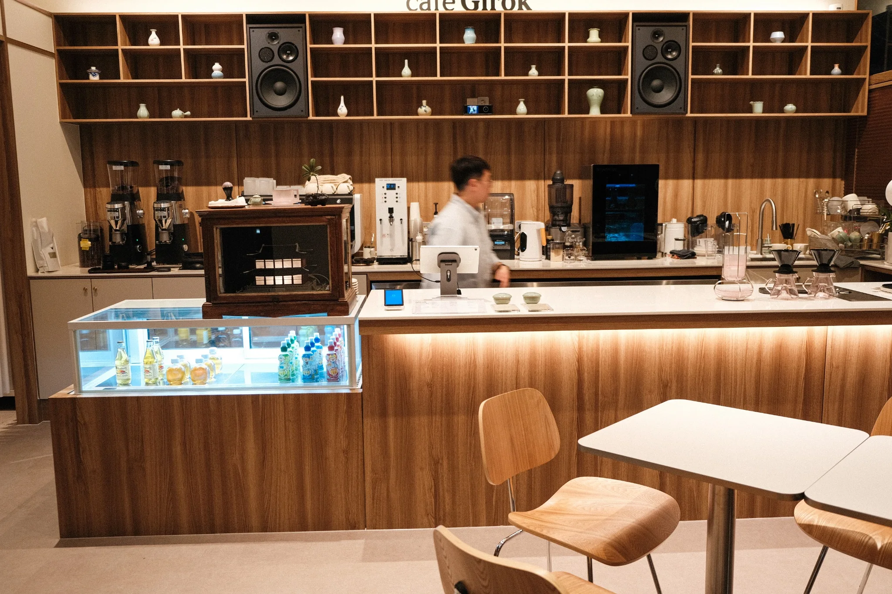

04 / ABOUT
About
GIROK.
브랜드를 설명하는 말은 간결하게. GIROK은 커피와 공간, 그 안에서 일어나는 일상의 장면을 중심으로 소개됩니다.

OUR APPROACH
A thoughtful coffee space
for everyday moments.
GIROK의 브랜드 이야기는 실제 공간과 커피에서 출발합니다. 창업 배경이나 브랜드명의 의미는 확인된 사실이 정리되면 추가합니다.